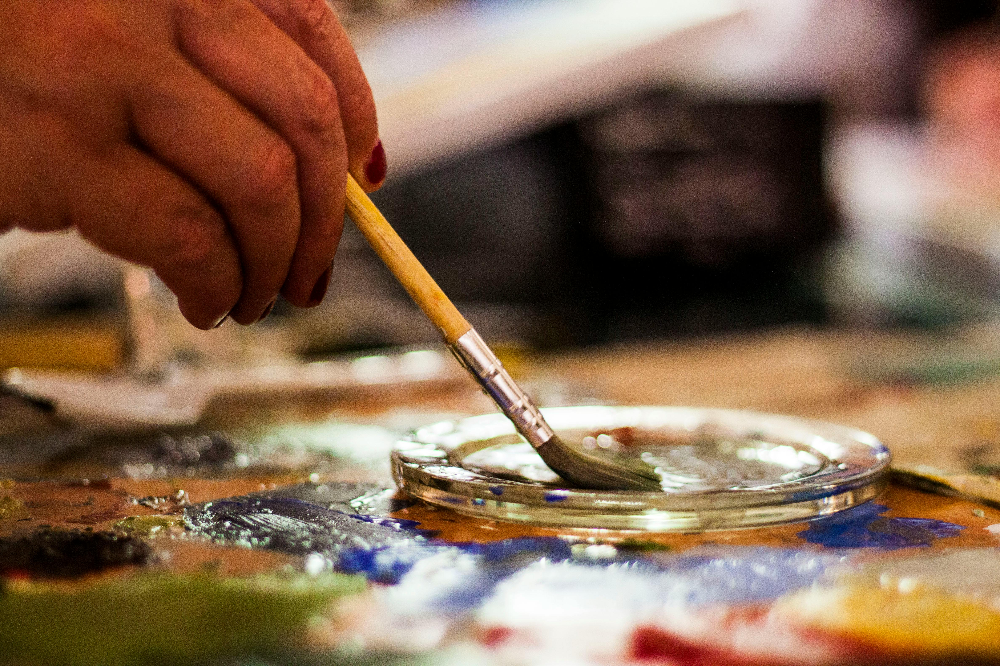

Blog - Tech Palette Mentor
Welcome to our blog! Here you'll find insightful posts on Irish art history, modern art techniques, and more!
- How to Use Tech Palette to Help You Paint: A Guide for Artists
- Exploring Ireland's Art History and the Influence of Religion
- The Influence of Celtic Art on Modern Irish Artists
- The Evolution of Irish Landscape Painting
- Art and the Irish Diaspora: Connecting the Past and Present
- The Irish Arts and Crafts Movement: A Forgotten Legacy
- Famous Irish Artists of the 19th Century
- Women in Irish Art: Pioneers and Contemporary Figures
- Exploring Irish Modernism: The Transition to 20th Century Art
- How Irish Art Reflects Its People
- The Birth of Irish Surrealism: A Look at Artists Like Louis le Brocquy
- The Restoration of Irish Art: The Role of Galleries and Museums
- Art Movements in Ireland: From Abstract Expressionism to Contemporary Art
- Exploring Irish Folklore Through Art
- Irish Art in the Digital Age Technology and Modern Creativity
- The Role of Street Art in Modern Irish Culture
- Environmental Themes in Contemporary Irish Art
- Queer Perspectives in Irish Art: A Modern Revolution
- The Intersection of Music and Visual Art in Ireland
- Post Troubles Art How Contemporary Artists Reflect on Conflict
- Irish Art Collectives and Their Impact on the Modern Scene
- The Global Reach of Contemporary Irish Artists
- Exploring Gender Dynamics in Contemporary Irish Art
- Irish Sculpture in the 21st Century: Monumental and Experimental
- Photography in Modern Irish Art: Documenting Identity and Change
- Modern Irish Art and the Revival of Craftsmanship
- Irish Artists Exploring Migration and Identity
- Experimental Art Spaces in Ireland: Breeding Grounds for Innovation
- Funding Opportunities for Artists in Ireland and the UK: Unlocking Support for Creative Projects
- Top Art Supply Shops in Ireland and the UK: Your Go-To Destinations for Creative Materials
- Old Holland Oil Paint: A Timeless Tradition in Fine Art Materials
- Winsor & Newton Oil Paints: A Legacy of Excellence in Fine Art Materials 